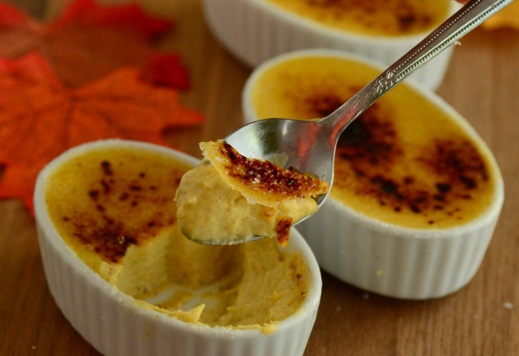

Pumpkin Crème Brûlée, a Deliciously Fancy Twist on Seasonal Desserts
Pumpkin Crème Brûlée
If you love pumpkin pie (uhh, who doesn’t?!), it’s time to get a little fancy and turn the classic flavor profile into an elegant French dessert. That’s right, we’re talking pumpkin crème brûlée.
Like a traditional crème brûlée, the velvety texture in this seasonal dessert comes from a combination of cream and egg yolks. The custard then gets an infusion of pumpkin pie spices and a hint of brown sugar, making every bite more delicious than the last.
Recipe:
Ingredients
- 1 cup heavy cream
- ½ cup whole milk
- ⅓ cup brown sugar
- 4 large egg yolks
- ¼ cup pumpkin puree
- 1 teaspoon pumpkin pie spice
- Sugar, for topping
Tools
- 4 ramekins (2-4 oz each)
- Kitchen torch
Instructions
1. Preheat oven to 300 F. Place four shallow ramekins in a baking dish.
2. In a medium saucepan, combine heavy cream, milk and brown sugar. Bring to a simmer and stir to dissolve the brown sugar.
3. As the cream heats up, whisk together egg yolks, pumpkin and pumpkin pie spice.
4. Slowly stream in the hot milk mixture while whisking continuously to temper the eggs without cooking them. Whisk in the vanilla extract.
5. Strain the pumpkin mixture through a fine strainer into a large measuring cup to remove any lumps.
6. Divide the pumpkin mixture evenly between the prepared ramekins. Fill the baking dish containing your ramekins with hot water, until the water reaches halfway up the sides of the ramekins.
7. Place the pan in the oven and bake for 25-30 minutes, or until the custards are set. Allow them to cool in the water bath, then refrigerate until cold (at least 2 hours).
8. Before serving, cover each custard with a thin layer of sugar, turning the ramekin to coat the surface of the custard.
9. Caramelize sugar with a kitchen torch. Serve immediately.
10. Beginning on a short side, roll up the cake and paper towel layer together. Be sure to do this promptly, while the cake is still warm, or it will crack. Arrange, seam-side-down on the rack and let it cool completely. (The seam will not be directly under the cake, but just to the side, facing down).
Pro Tip: A torch is the easiest way to caramelize the sugar, but if you don’t have a kitchen torch you can heat up the broiler, place your custards on a baking sheet, and hold them close to the flame.

Share tips, start a discussion, or ask one of our experts or other students a question.